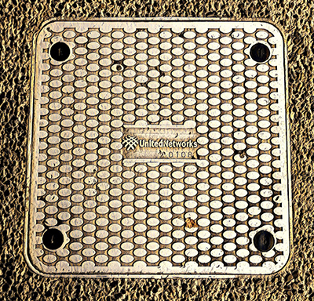

HYNDS
They are the supply partner of choice for New Zealand’s civil construction industry, specialising in water and infrastructure based solutions.

Wellington City Council
This manhole cover is short for Wellington city council, which is responsible for the construction of the whole city, and of course the network construction is an essential part of it. Wireless networks in cities and public areas are all about networking.For a more detailed and context of Wellington city council online at Wellington City Council.

United Networks
The mark on the manhole cover is United Networks. The manhole covers of various network companies are distributed in Wellington, with different designs. The company's main businesses are wi-fi pass, SOS Alert, Global SIM, etc.